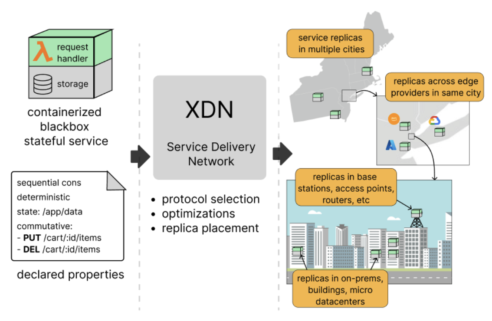

The architecture of XDN
XDN is split into two planes: a control plane that decides where a service runs and resolves clients to it, and a replication (data) plane that runs the service, replicates its state, and answers requests. Both are built on top of GigaPaxos, the reconfiguration and consensus framework XDN extends.

Two planes
| Plane | Component | Responsibility |
|---|---|---|
| Control | Reconfigurator (RC) | Service lifecycle (create/delete), replica placement, epoch/reconfiguration, demand aggregation, and geo-DNS for service.<domain>. |
| Data | Active Replica (AR) | Terminates client HTTP(S), routes each request to the right replication coordinator, runs the containerized service, and captures its on-disk state. |
A deployment has a small number of reconfigurators (the control plane) and many active replicas spread across edge locations (the data plane).
Control plane: the Reconfigurator
The Reconfigurator owns each service's record and replica set. It exposes a
RESTful control API (used by the xdn CLI) to create, inspect, and destroy
services and to read/adjust placement, and it drives reconfiguration — moving
or resizing a replica group — as a sequence of epochs (stop the old epoch,
transfer state, start the new one, drop the old). Reconfiguration decisions are
themselves agreed via Paxos so the control plane stays consistent.
The reconfigurator also runs an authoritative geo-DNS server
(DnsReconfigurator). A query for service.<domain> returns the IP(s) of that
service's active replicas, so clients are steered to a nearby replica.
Data plane: the Active Replica
Each active replica is a stack of components:
- HTTP frontend (
HttpActiveReplica) — a Netty server that terminates HTTP and HTTPS (TLS, with a wildcard cert in the cloud deployments), infers which service a request targets (from theHostsubdomain, anXDNheader, or a query parameter), and tags each request with its read/write behavior and the client's geolocation. - Replica coordinator (
XdnReplicaCoordinator) — routes the request to the protocol coordinator that matches the service's declared properties (Paxos, primary-backup, client-centric, causal, PRAM, or lazy). This is where the consistency guarantee is enforced. - Application layer (
XdnGigapaxosApp) — executes a coordinated request by forwarding it to the service container and returning the response; it also owns per-service, per-epoch state and the state-diff recorder. - Containerized service — your blackbox image(s), launched via
docker compose(DockerComposeManager), with the declared--statedirectory mounted in.
Built on GigaPaxos
XDN slots its logic into GigaPaxos through a coordinator wrapper: a single
XdnReplicaCoordinator fronts the per-service protocols, and the deterministic
and non-deterministic paths share the same application underneath.
XDNReplicaCoordinator
_________________|_________________
| |
PaxosReplicaCoordinator PrimaryBackupReplicaCoordinator
| |
PaxosManager PrimaryBackupManager
| |
| PaxosManager
|___________________________________|
|
XDNGigapaxosApp
(Other consistency models — client-centric, causal, PRAM, lazy — hang off
XDNReplicaCoordinator the same way.)
Request flow
- Resolve. The client looks up
service.<domain>; the reconfigurator's geo-DNS answers with a nearby active replica's address. - Receive. The replica's HTTP frontend accepts the request, identifies the service, and classifies the request (read-only vs. write, plus client location for demand tracking).
- Coordinate.
XdnReplicaCoordinatorhands the request to the service's coordinator. A read-only request under a weak model may be served locally; a write is ordered/replicated according to the protocol (e.g. Paxos consensus, or primary-backup state shipping). - Execute. The coordinated request is forwarded to the container, which reads/writes its mounted state directory and returns an HTTP response.
- Replicate state. For non-deterministic / primary-backup services, the resulting on-disk state diff is captured and shipped to the other replicas, which apply it so all copies converge.
- Respond. The replica that received the request returns the response to the client.
State capture and replica movement
Because services are blackboxes, XDN captures state at the filesystem level.
The declared state directory is backed by a FUSE filesystem
(FuselogStateDiffRecorder, with rsync/zip fallbacks): every write is
observed, so a primary can emit a compact diff of what changed and backups can
apply it without understanding the data. The same mechanism enables amoebic
placement — when the reconfigurator moves a replica to a new edge node, it
checkpoints and transfers the captured state across the epoch boundary so the new
replica starts where the old one left off.
Amoebic placement and demand
Each active replica profiles where its requests come from. The frontend
reads a client-location header when present, otherwise geolocates the source IP
(GeoIpResolver over a GeoLite2 database), and accumulates read/write counts on
a coarse geographic grid (XdnGeoDemandProfiler). Replicas periodically report
their hottest cells to the reconfigurator, which aggregates them into a demand
heatmap (optionally over a rolling time window). The control plane uses that
heatmap to place replicas closer to user demand — keeping latency low like a CDN
while preserving the service's requested consistency guarantee.